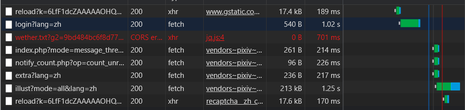

前言
放假以来一直无所事事，刚好刚放假那段时间学习了爬虫，也一直没有特别想爬取的网站，闲来无事就想试着爬取一下pixiv帮我以后更方便的下载图片比如涩图（bushi）。
….现在写完了下载了好多图片，确实好涩 草
设想
一开始是打算使用selenium来写，感觉用selenium一步步来调试会比较方便，而且最关键的是如果使用selenium登录的时候能很好的规避ReCAPTCHA验证码这个问题，但是最后发现这个方法太低效了，在这里应该也只有装逼成分没有什么效率成分了（。
经过一番规划后，基本打算实现获取排行榜图片、通过用户id获取图片、通过标签搜素获取图片这三个主要功能，呐规划好之后就开始为时一天的痛苦代码历程了www。
过程
一、模拟登录
成功找到pixiv官网之后，刚打算开始大展拳脚的时候，突然发现这网站居然需要登录，那就只能通过request库的session进行模拟登录了。首先输入自己账号进行登录同时通过抓包工具找到登录的发送的Ajax文件。很明显下图里面的login?lang=zh就是我们要找Ajax文件。

找到文件后对文件进行分析，可以看到它的Request URL和发送的方式是POST。

接下来看的是它的Form Data部分的数据。可以看到它需要发送的有password、pixiv_id、post_key、source、return_to等一些空白的无关紧要的数据。

password和pixiv_id就不需要过多解释了，经过多次登录我们可以发现post_key在不断的变，而return_to取决于我们进入登录界面的前一个转入界面。经过不断寻找（此处省略一万字）可以发现这里有个post_key，再次登录进行测试可以发现这个post_key就是我们登录需要的post_key。我们可以通过xpath把这个post_key给拿出来。

拿到之后，把登录需要的data、url、headers写入就可以通过session进行模拟登录了。

二、排行榜获取
- 本文链接：http://mlinku.top/2021/07/19/%E7%88%AC%E8%99%AB%E5%85%A5%E9%97%A8-pixiv%E5%9B%BE%E7%89%87%E7%88%AC%E5%8F%96/
- 版权声明：本博客所有文章除特别声明外，均默认采用 许可协议。